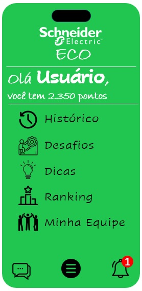
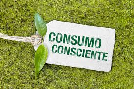

Integrantes do grupo e suas respectivas funções
- Leandro Doudement França - Desenvolvimento
- Miguel Avença Jercem - Conteúdo e imagens
- Pedro Nadaleto - Vídeo
- Leonardo Marques - Narração e conteúdo
Desafios
- Reduza, Reutilize, Recicle: Adote a regra dos 3 Rs. Reduza o consumo, reutilize itens sempre que possível e recicle materiais como papel, plástico e vidro.
- Economize Energia: Desligue as luzes e aparelhos eletrônicos quando não estiver usando. Use lâmpadas LED de baixo consumo e considere a instalação de painéis solares.
- Economize Água: Repare vazamentos, use regadores em vez de mangueiras, tome banhos mais curtos e opte por equipamentos economizadores de água.
- Transporte Sustentável: Opte por caminhar, andar de bicicleta, usar o transporte público ou compartilhar caronas para reduzir as emissões de carbono.
- Alimentação Consciente: Prefira alimentos locais e sazonais, reduza o consumo de carne e opte por fontes sustentáveis de proteína, como leguminosas.
- Reduza o Plástico: Evite o uso de produtos plásticos descartáveis, como sacolas, copos e talheres. Opte por produtos reutilizáveis, como garrafas de água e sacolas de pano.
- Compre de Forma Consciente: Escolha produtos duráveis e de boa qualidade. Priorize marcas que adotem práticas sustentáveis em sua produção.
- Compostagem: Separe resíduos orgânicos e faça compostagem em casa. Isso reduz a quantidade de lixo que vai para aterros sanitários.
- Reduza o Consumo de Água Engarrafada: Use garrafas reutilizáveis e instale filtros de água em casa para reduzir a dependência de água engarrafada.
- Participe e Eduque: Engaje-se em atividades comunitárias relacionadas à sustentabilidade. Compartilhe seu conhecimento com amigos e familiares para incentivar mudanças positivas.

Recursos e conteúdos do curso utilizados
- HTML: A linguagem de marcação HTML foi fundamental para estruturar a base do projeto. Utilizou-se a semântica HTML para definir os diferentes elementos da página, como cabeçalho, corpo e rodapé. Através das tags HTML, foi possível criar a estrutura da página de forma organizada e hierárquica.
- CSS: A linguagem de estilos CSS desempenhou um papel crucial na apresentação visual do projeto. Utilizaram-se estilos CSS para definir cores, fontes, tamanhos, margens e posicionamento dos elementos na página. O CSS permitiu a personalização da aparência do projeto, garantindo uma experiência visual agradável aos usuários.
- JavaScript: A linguagem de programação JavaScript trouxe interatividade e dinamismo ao projeto. Utilizou-se o JavaScript para implementar funcionalidades como interações de usuário, validações de formulário e manipulação do DOM. Isso permitiu criar uma experiência mais envolvente e responsiva para os visitantes da página.
- Semântica Web: A compreensão da semântica da web foi essencial para criar um código HTML bem estruturado e acessível. Utilizou-se tags semânticas como header, main, para fornecer significado aos diferentes elementos da página, facilitando a interpretação por parte dos mecanismos de busca e leitores de tela.
- Design Responsivo: Os princípios do design responsivo foram aplicados para garantir que o projeto fosse visualmente atraente em diferentes dispositivos e tamanhos de tela. Utilizou-se técnicas de CSS, como media queries, para ajustar os estilos de acordo com as características dos dispositivos, proporcionando uma experiência consistente e adaptativa.